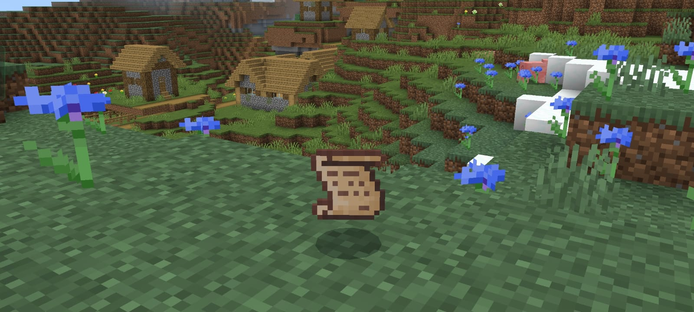

Maison de Tonmou8128
Un Add-On Minercaft Bedrock permet d'ajouter du gameplay personnalisé, tel que des nouveaux objets, nouveaux blocs, etc... Dans cet Add-On, un nouvel objet et des nouveaux "enchantements" sont ajoutés.
Le parchemin permet d'obtenir une bénédiction, une sorte d'enchantement qui s'active une fois sur cinquante. Il y en a 5 différentes. Le code source ainsi que des explications plus détaillées sont disponibles sur mon GitHub: https://github.com/Tonmou8128/Benedictions-Add-On
Ce projet m'a appris à maîtriser les objets en javascript, à l'aide des fonctions comme Object.keys(), Object.values(), ou Object.entries().
On retrouve dans cet Add-On un grand objet plutôt complexe d'ailleurs:
const benedictionsDef = {
Hurricane: {
glyph: "",
color: "§u",
function: (damagingEntity, hitEntity) => hurricane(damagingEntity, hitEntity)
},
Oni: {
glyph: "",
color: "§j",
function: (damagingEntity, hitEntity) => oni(damagingEntity, hitEntity)
},
//etc...
}
J'ai appris pour la première fois le fonctionnement des tables de loot de Minecraft Bedrock.
"rolls": 1,
"entries": [
{
"type": "item",
"name": "benediction:parchment",
"weight": 1
},
{
"type": "empty",
"weight": 19
}
]
J'ai également bien mieux compris le fonctionnement des fonctions fléchées en javascript. Je les ai notamment utilisées avec forEach(), find(), ou encore some()
Pour conclure, j'ai appris à utiliser le chaînage optionnel ?. pour éviter de toujours avoir à placer des conditions pour vérifier si une variable est définie. Par exemple, dans offItem?.typeId === "benediction:parchment", je n'ai pas eu besoin de vérifier si l'objet dans la main secondaire (offItem) est défini. Si je n'avais pas mis ?. et s'il n'y avait aucun objet dans la main secondaire, une erreur aurait été renvoyée.